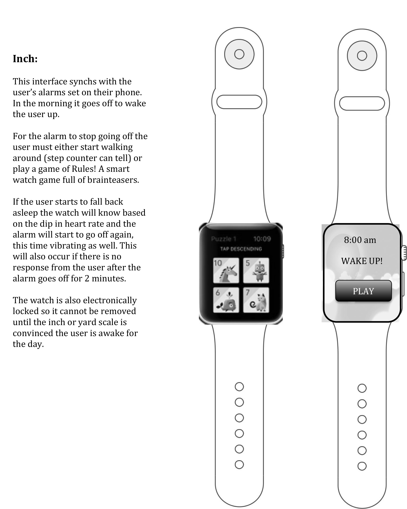
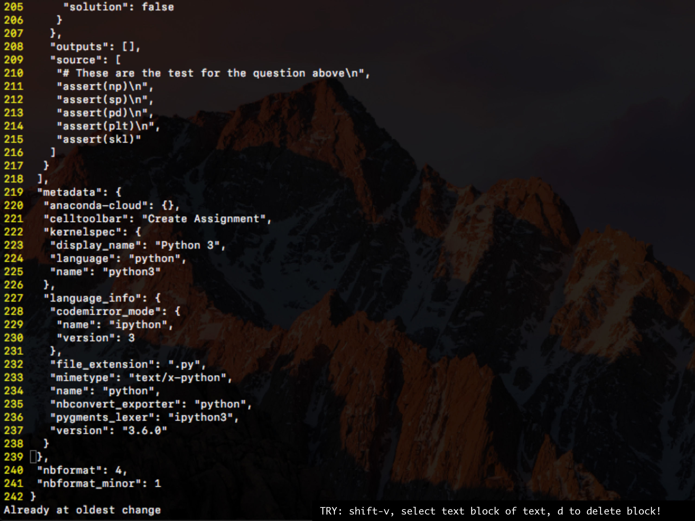
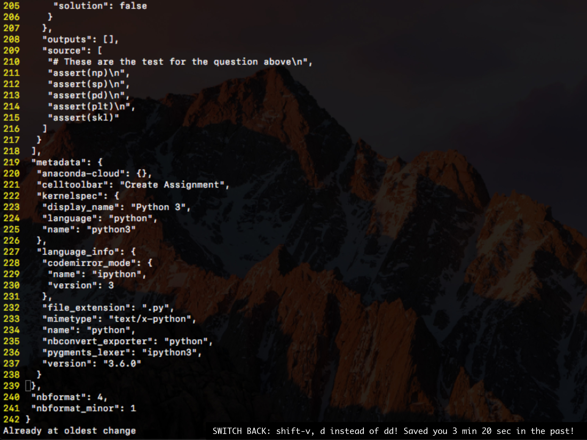
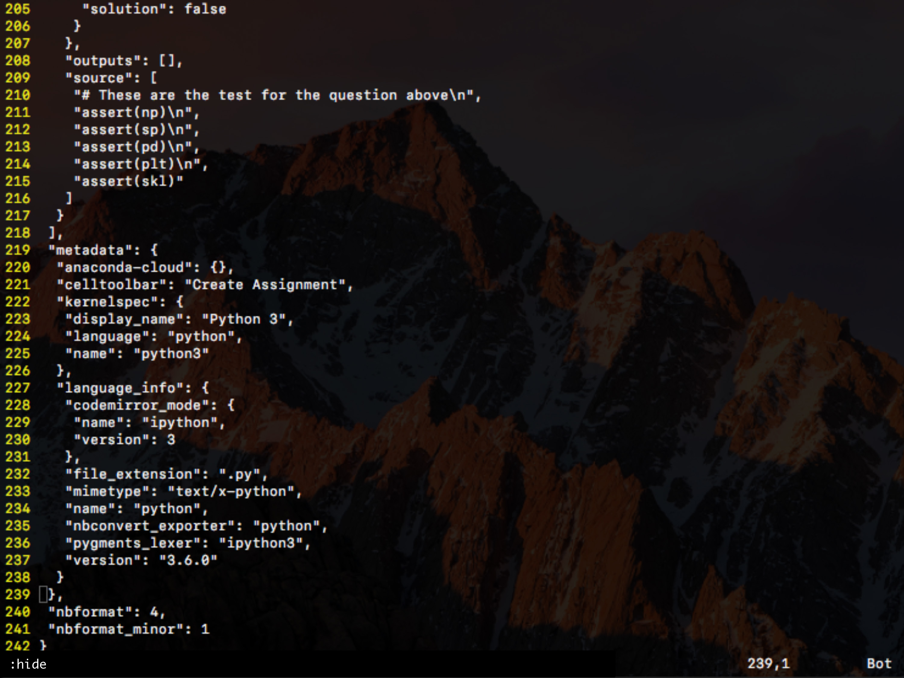

Persona: Jeff is an undergraduate student. He has a really hard time waking up in the morning and sleeps through his alarms pretty often. Jeff needs a way to make sure he wakes up in the morning in time for class. In the morning Jeff usually watches YouTube to start and wake up.
Inch: Jeff needs to wake up in the morning and uses his watch to do so. The watch interface connects with his cell phone to determine when to wake him up in the morning (Further description in the pdf)
Foot: Jeff needs to wake up in the morning. Once the inch and yard scales are convinced he is awake the foot scale is unlocked and can be taken around the apartment. It contains information about the day as well as the general resources he uses to wake up in the morning (Further description in the pdf).
Yard: Jeff and Sophia need to wake up in the morning. This interface is used to wake them both up based on their individual needs (Further description in the pdf).



